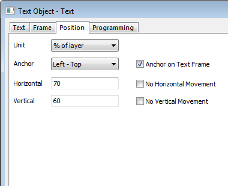
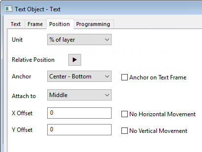
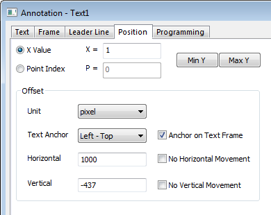
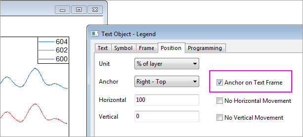
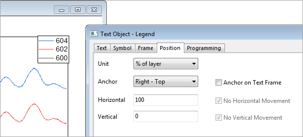

Die Registerkarte Position (Textobjekt - Text)
TextOb-Prop-Position-tab
| Textobjekt |
Distanzanmerkung
Klammern mit Sternchen |
|  |
 |
| Anmerkung |
|  |
Für Textobjekt / Legende / Distanzanmerkung / Klammern mit Sternchen
Einheit
Die Auswahlliste Einheiten bietet absolute und relative Einheiten.
Absolute Einheiten für Horizontalund Vertikal
| Zoll, cm, mm, Pixel, Punkt, Skalierung |
Absolute Einheiten für Horizontal und Vertikal
|
| Skalierung |
Wenn diese Einheit ausgewählt ist, entspricht die Beschriftungsposition der Achsenskalierung. Sie ändert sich, wenn die Achsenskalierung geändert wird. |
| % der Seite |
Wurde diese Einheit ausgewählt, entsprechen die Werte in den Textfeldern Horizontal und Vertikal den Prozentwerten der Höhe und Breite der Diagrammseite.
|
| % des Layers |
Wurde diese Einheit ausgewählt, entsprechen die Werte in den Textfeldern Horizontal und Vertikal den Prozentwerten der Höhe und Breite des Layers.
|
Relative Position
Bedienelement verfügbar für Distanzanmerkung und Klammern mit Sternchen. Die Objekte, die mit diesen Hilfsmittel erstellt werden, sind Hybridobjekte in dem Sinn, dass ein "Ziel"textobjekt mit einem gezeichneten "Quell"objekt "verbunden" ist -- entweder mit einem Pfeil oder einer Klammer. Daher beschreibt die Relative Position die Position des Zielobjekts in Bezug auf das Quellobjekt.
Beachten Sie, dass die Systemvariable @URPC auf 1 (Standard) gesetzt sein muss, wenn diese Objekte erstellt werden. Ansonsten zeigt die Registerkarte Position das Bedienelement Relative Position nicht an.
Siehe diese Themen:
Verankern
Legen Sie den Ankerpunkt auf dem Objekt in dieser Auswahlliste fest.
Wenn Sie zum Beispiel Links-Oben als Anker wählen, dann wird der linke obere Punkt des Objekts in die Position des festgelegten Werts für Horizontal und Vertikal verschoben.
|
Hinweis:
- Wird die Auswahl der Einheit über die Auswahlliste verändert, werden die Werte der Textfelder Horizontal, Vertikal automatisch aktualisiert, so dass das Objekt die gleiche Größe und Position beibehält.
|
Anker auf Textrahmen
Legen Sie den Ankerpunkt auf dem Rahmen fest. (Der Rahmen des Textobjekts kann auf der Registerkarte Rahmen benutzerdefiniert angepasst werden.)
Wenn es keinen Rahmen im Objekt gibt, wird der Anker unabhängig von dem aktivierten Kontrollkästchen am Rand des Texts gesetzt.
Wenn es einen Rahmen im Objekt gibt und dieses Kontrollkästchen aktiviert ist, wird der Anker am Rand des Texts gesetzt.
_Position_tab/Tutorial_icon.png) |
Mini-Tutorial: Legende in der oberen rechten Ecke des Layers fest positionieren
- Klicken Sie mit der rechten Maustaste auf die Legende und wählen Sie Einstellungen im Kontextmenü.
- Gehen Sie im Dialog Textobjekt zur Registerkarte Position.
- Setzen Sie Anker = Rechts - Oben, Horizontal = 100 und Vertical = 0.
- Stellen Sie sicher, dass die Option Anker auf Textrahmen aktiviert ist.
- 
Hinweis: Sollte Anker auf Textrahmen deaktiviert sein, kann die obige Einstellung nicht für die Ausrichtung von Legende und Layerrahmen sorgen.
- 
|
Anhängen an
Bedienelement verfügbar für Distanzanmerkung und Klammern mit Sternchen. Beachten Sie, dass die Systemvariable @URPC auf 1 (Standard) gesetzt sein muss.
- Wenn das gezeichnete Quellobjekt eindimensional ist -- gerade Linie, Pfeil, gekrümmter Pfeil, Polylinie, Kurve oder Freihandlinie --, wird die Option Anhängen an des Textobjekts auf Anfang, Mitte oder Ende gesetzt und sie an einen dieser Punkte im Quellobjekt (z. B. Mitte- Oben) angehängt.
- Wenn das Quellobjekt zweidimensional ist -- Rechteck, Kreis, Polygon, Region, geschlossene Polyline/Kurve/Freihandlinie --, ist die Option Anhängen an des Textobjekts eine Kombination von Oben, Unten, Links, Rechts und Mitte (z. B. Mitte - Oben) in Bezug auf das gezeichnete 2D-Quellobjekt.
Horizontal/Vertikal oder X-Versatz/Y-Versatz
Legen Sie den Wert der horizontalen bzw. vertikalen Verschiebung fest.
Wenn Sie das Kontrollkästchen Keine horizontale Verschiebung/Keine vertikale Verschiebung aktivieren, wird verhindert, dass das Objekt über einen Anker in der horizontalen oder vertikalen Verschiebung verfügt.
Für Distanzanmerkung und Klammer mit Sternchen werden die Bedienelemente durch X-Verschiebung und Y-Verschiebung ersetzt und verwendet, um die Position des Textobjekts vom gezeichneten Quellobjekt zu versetzen.
Für Anmerkungsobjekt
Verwenden Sie auf der Registerkarte des Anmerkungsobjekts die folgenden Optionen, um den zu verbindenden Datenpunkt des Objekts zu ändern.
| X-Wert |
Wählen Sie die Option X-Wert und geben Sie den X-Wert in das Textfeld ein. Das Anmerkungsobjekt ist dann mit dem Datenpunkt verbunden, das diesem X-Wert entspricht, und der Text wird entsprechend diesem Datenpunkt aktualisiert. |
| Punktindex |
Wählen Sie die Option Punktindex und geben Sie den Index des Datenpunkts im Textfeld ein. Das Anmerkungsobjekt ist dann gemäß diesem Index mit dem Datenpunkt verbunden, und der Text wird entsprechend diesem Datenpunkt aktualisiert. |
| Min. Y |
Wenn Sie auf diese Schaltfläche klicken, wird das Anmerkungsobjekt verschoben, damit es mit dem Datenpunkt des minimalen Y-Werts verbunden wird. Der Text wird entsprechend diesem Datenpunkt aktualisiert. |
| Max. Y |
Wenn Sie auf diese Schaltfläche klicken, wird das Anmerkungsobjekt verschoben, damit es mit dem Datenpunkt des maximalen Y-Werts verbunden wird. Der Text wird entsprechend diesem Datenpunkt aktualisiert. |
_Position_tab/Tip_icon.png) |
Seit Origin 2017 können Sie Anmerkungsbeschriftungen von Punkt zu Punkt ziehen. Klicken Sie auf die Schaltfläche Zeiger _Position_tab/Button_Pointer.png) , drücken Sie die ALT-Taste und verwenden Sie das Fadenkreuz, um die Beschriftung zu einem anderen Datenpunkt zu ziehen. , drücken Sie die ALT-Taste und verwenden Sie das Fadenkreuz, um die Beschriftung zu einem anderen Datenpunkt zu ziehen.
|
Versatz
| Einheit |
Die Auswahlliste Einheiten bietet absolute und relative Einheiten für diese Verschiebung. |
| Textanker |
Legen Sie den Ankerpunkt auf dem Objekt in dieser Auswahlliste fest.
Wenn Sie das Kontrollkästchen Anker auf Textrahmen aktivieren, befindet sich der Ankerpunkt auf dem Rahmen. (Der Rahmen des Textobjekts kann auf der Registerkarte Rahmen benutzerdefiniert angepasst werden.)
|
| Horizontal/Vertikal |
Legen Sie den Wert der horizontalen bzw. vertikalen Verschiebung fest.
Wenn Sie das Kontrollkästchen Keine horizontale Verschiebung/Keine vertikale Verschiebung aktivieren, wird verhindert, dass das Objekt über einen Anker in der horizontalen oder vertikalen Verschiebung verfügt.
|
Um das Verschieben eines Objekts in horizontaler oder vertikaler Richtung einzuschränken, können Sie die Shift-Taste drücken, während Sie das Objekt mit Ihrer Maus ziehen.
|
|